First decision: which link is missing
Buy one large soft source plus a reflector/diffusion, then a second light. The first light must dim, hold color, and run quiet. On a budget, solve direction and softness on a face before buying color effects.
Fits:
- Interview/voiceover, one or two
- Indoor product, controlled ratio
- Small crew, fast setup
Does not fit:
- Large events needing high output
- Bright exteriors needing power
- Complex color effects
Test protocol: reproducible, no invented scores
Put the light through a softbox on a face. Shoot normal skin, shadow side, and highlight. Record 30 seconds of sync sound for fan noise. Put two lights at the same temperature on one wall and compare.
| Check | Pass line | Reference/log |
|---|---|---|
| 显色 | 肤色自然，不偏绿/品 | 人脸 4K 回放 |
| 输出 | 柔光后 ISO 800 可用 | 测光表/波形 |
| 色温 | 两灯同场景无跳色 | 双灯对比 |
| 噪声 | 1 米录音无风扇声 | 30 秒同期 |
| 控光 | 能做出 2:1–4:1 光比 | 柔光/旗板 |
Five light-kit checks

Price bands: total cost of ownership first
Look beyond the sticker: cards, batteries, adapters, gimbal, stands, software subscriptions, and repair. Bands describe the minimum kit for a real project type, not toy pricing.
| Tier | Reference | Includes | Watch |
|---|---|---|---|
| Entry | ¥1,000–3,000 | One COB + softbox + stand | Limited output/color |
| Main | ¥3,000–8,000 | Two COBs + softbox/grid + reflector | Battery/control extra |
| Advanced | ¥8,000–20,000 | Three lights, RGB, pro control, wireless | Weight and power |
Prices are China mainland channel references as of November 2026; tax and quotes vary. Not buying advice.
Alternatives and upgrades: do not add money on the wrong axis
- One light + reflector
- Rent two COBs
- Window light + diffusion
Buying steps: bring footage, not spec sheets
Run these in order before paying. If one fails, do not tell yourself post will fix it.
- Softbox on face in 4K
- Meter ISO 800 through diffusion
- Two-light color match
- Record fan at 1m
- Build 2:1/4:1 ratio
Decision tree: soft or hard, power, then power supply
More light is not better light. Close portraits need soft; product detail needs hard; night exteriors need spill control. Decide soft/hard first, choose power by distance, then battery or mains.
- Write the subject distance: 0.5m, 1.5m, 3m.
- Close portrait: softbox/lantern; product: bare head plus control.
- Estimate power from distance and aperture, not wattage alone.
- Mains for fixed interior, battery for exterior; budget runtime and weight.
Eight comparisons: brightness is not the only metric
| Item | Pass line | Fits | Does not fit |
|---|---|---|---|
| Output | At 1.5m through a softbox, ISO 800/1/50 reaches f/4 | Single interview | Large daylight exterior |
| Colour | CRI/TLCI public; skin not green | People, product | Rim only |
| Beam angle | Soft and spot attachments | Multiple scenes | Fixed soft only |
| Colour temp | 2700–6500K, bi-colour without shift | Mixed light | Single temp |
| Flicker | No banding at 1/50 | Video | High-speed |
| Fan noise | Inaudible at 1m | Sync sound | Silent set |
| Power | Battery covers half a day; hot-swap | Exterior | Fixed studio |
| Total cost | Head + softbox + stand + sandbag + battery | Every project | Head only |
Test scope: white wall, grey card, flicker, fan noise
At 1.5m, shoot a white wall at three levels and check centre-to-edge falloff; place a grey card to see skin shift; shoot a fan/tube at 1/50 for banding; record 30 seconds of room tone for fan noise. Not measured: integrating sphere, spectrometer, lab flicker.
Continue: lighting hub
Read the fixture, then control and exposure.
- Buying LED: output, flicker, power
- Softbox: size decides softness
- COB light: one head plus softbox
- LED panel: colour and output
- Light gels: CTO, CTB, ND
- One-light portrait: direction first
- Window fill: reflector position
- Stands and sandbags: safety first
- Exposure check: waveform, zebra, false colour
- Night practicals: balance exposure
Verification and price date
Verified 2026-11-23. Prices are China mainland channel references; only white-wall and grey-card short tests were done, not integrating-sphere or spectrometer measurement.
Buying order: rent before buying
Rent one head and softbox for a close-up; confirm output, colour and fan noise before buying a second.
- Rent the target body and a common lens once; shoot a real project.
- Confirm mount, adapter, autofocus and power.
- Total the cards, batteries, monitor, storage and repair.
- Keep 10% for surprises and consumables.
- Buy the second lens after the first delivery.
Add: failure cases
The common lighting mistake is buying wattage instead of distance and softness.
| Move | Result | Replace with |
|---|---|---|
| Judge wattage without a softbox | Close-ups go hard and skin shines | Test with the softbox |
| Bare head with no control | Spill flattens the background | Buy diffusion/flags first |
| Ignore fan noise | Sync dialogue is full of hum | Record 30 seconds before deciding |
Add: pre-purchase checklist
A light is bought to make a face clean at 1.5m, not to look good in a shop. Pay only after four checks.
| Check | Pass line | Log |
|---|---|---|
| Softbox | Even pool at 1.5m; edge not hard | White-wall test |
| Flicker | No banding at 1/50 | Fan/tube shot |
| Fan noise | Inaudible at 1m | Thirty-second recording |
| Power | Battery covers half a day | Discharge test |
One line for the set
Give the face a direction before giving it more output; wrong direction plus power only looks faker.
Boundary: brighter is not better
Too much output flattens the room and makes the subject squint. Give the face direction, then match power to aperture and distance; do not use power to solve a small-light problem.
Image note. Covers, diagrams and step images on this page are editorial illustrations or structure diagrams, not photographs of a test performed here; they are not evidence of measured gear performance. Where an image is AI-assisted, the caption says so. Read the test conditions in the text before treating an image as proof.